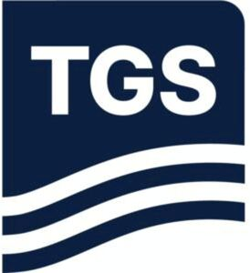

Trade Mark Journal No.2026/010 6 March 2026
WO0000001891012 (9,35,42)
Office of origin: Norway
Date of International Registration:27 December 2024
Date of designation in the UK:
27 December 2024

International priority date claimed: 29 July 2024
(Norway)
(202408252)
- Class 9
- Downloadable and recorded databases and software in the field of geophysical information; electronic databases of geophysical information recorded on computer media; computer software for use in performing geophysical data analysis, geophysical modeling, and geophysical data processing.
- Class 35
- Provide an online marketplace for buyers, sellers, licensors and licensees of seismic data; collection and compilation of information in databases within geophysical and seismic data; selection, collection and compilation of information from databases in the field of geophysical and seismic data, for business and commercial purposes; seismic and geophysical data processing services; business analysis and processing of geophysical and seismic data for the oil, gas and renewable energy industries; collection of geophysical data in the form of data collection services for business purposes; data services, namely, collection, processing and marketing of geophysical data for the oil, gas and renewable energy industries.
- Class 42
- Scientific and technological services and related research and design; industrial analysis and research services; design and development of hardware and software; geophysical surveys; geophysical research; geophysical exploration for the oil, gas, renewable energy and mining industries; computerized information services related to geophysical measurements; scientific data consulting services, namely, analysis of geophysical data and databases for the oil and gas industry, and preparation of reports related thereto; computer programming services; providing oil well log data [oil well diagnostics services] and geological maps [non-downloadable] via a global computer network and creating computer network-based indexes for collating, composing, merging and cataloging oil well log data and geological maps; data interpretation services, namely, interpretation of geophysical data and preparation of geological reports for the oil, gas and renewable energy industries; technical data analysis services related to geophysical data; geophysical data processing services, namely computerized imaging of geophysical data to create images of subsurface geological formations for use in the oil, gas and renewable energy industries; data conversion services, namely digitization of geophysical data for the oil, gas and renewable energy industries; oil and gas reservoir monitoring services for the detection and monitoring of hydrocarbons; scientific and geophysical analysis of seismic and geophysical data for the oil, gas and renewable energy industries; providing seismic and geophysical data to others, namely via a searchable online database of seismic and geophysical data; providing seismic and geophysical data for use in performing scientific and geophysical analysis in the oil, gas and renewable energy industries, via an online computer database; electronic data storage for seismic and geophysical data; consultation regarding marine exploration, mapping and monitoring of oil and gas reservoirs in oil and gas exploration and production; technological consultation in geology and geophysics; technical consultation regarding marine exploration, oil and gas surveys and renewable energy; scientific and technological services, namely research and design in the field of high-resolution 3D seismic data acquisition; scientific consulting services for industry and research communities related to cable systems with hydrophones for the collection of high-resolution 3D seismic data; digital geophysical imaging services, namely processing and interpretation of geophysical data to generate images of subsurface geological formations for use in the oil, gas and renewable energy industries.
TGS-NOPEC Geophysical Company
Representative: ZACCO NORWAY AS, Postboks 488, N-0213 OSLO, NORWAY